Key Takeaways
- Creates a cleaner and more organized settings.
- Allows you to hide category view in start menu.
- Reduces user confusion by removing unnecessary view options.
- Improves user experience and administrative control.
Let’s learn about managing Windows 11 Start Menu App Layout by Hiding Category View with Intune to Improve User Experience. This policy setting allows you to hide category view in the Start Menu. If you enable this policy setting, the Start Menu will no longer show the category view as an option and will default to grid view. This policy is available in windows 11 pc start menu settings.
Table of Contents
What are the Advantages of this Policy?
The main purpose of this policy is to control how apps are organised and displayed. It allows apps to be grouped into categories such as enterprise or lab environments. Category view automatically groups your apps by category for quick access to your most used categories and apps.
1. Hide the category layout and show a grid layout instead.
2. Creates a cleaner and more organised start menu.
3. Reduces confusion for users.
4. Maintains a consistent start menu.
The Hide Category View policy controls whether the category view appears in the start menu. When it is enabled, the category view is hidden. Start menu switches to grid view by default; then users cannot select category view anymore, otherwise category view remains available. It is mainly used for customisation and management of apps displayed in Windows.
How to Create the Hide Category View Policy
You can easily set up a hide category view policy through Microsoft Intune Admin Centre. To start the policy creation, open the Microsoft Intune Admin Centre. Then go to Device> Configuration. Click on the dropdown arrow of the Create option and choose New Policy.

Initialise the Hide Category View Policy Profile
Click on New policy to open the profile creation window. Choose Windows 10 and later as the platform. Then select Settings catalog as the profile type. After configuring these options, click on create button to set up the hide category view policy.
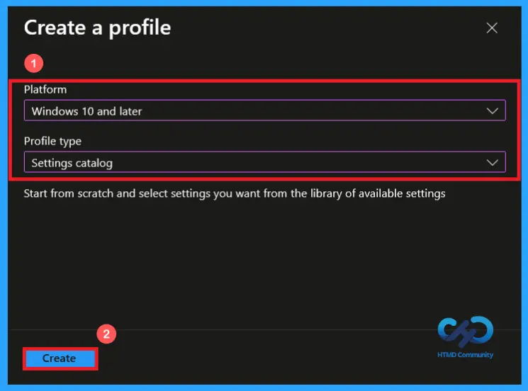
Basics Tab of Hide Category View Policy
On the Basics tab, enter a suitable name for the policy. Here, the policy is named “Hide category view”. Providing a suitable name makes the policy easier to identify and manage later and I provided a description “To hide the Category view“, adding a description is optional. After adding the details, click on the next button to continue.
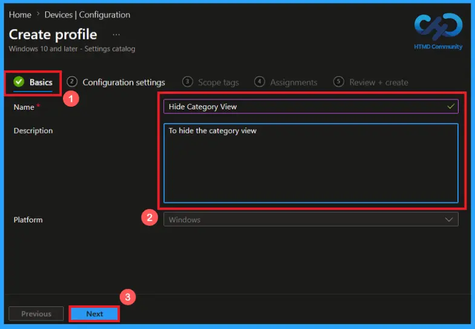
Configure Hide Category View policy
On the configuration settings, when you click on Add Settings, a settings picker will open. Here you can search and select the policy. I selected the category as Start and selected Hide Category View. Configuration settings are used to control device behavior and features.
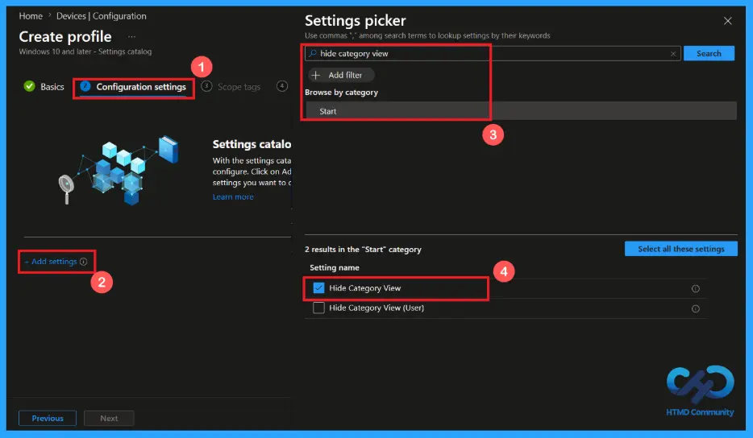
Category View Shown
By default, the Hide Category View policy is shown. If you continue with this, apps are always categorised in the Start menu. It makes users find the apps by type easily. Users can see grouped sections such as office apps, communication, and accessories.
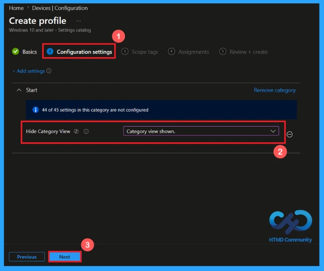
Hide Category View Setting
This setting controls whether the category view in the Windows Start Menu is visible to users. You can select the category view option hidden or shown by clicking on the drop arrow. It defines how the policy behaves on Windows devices. After selecting the option, click Next to continue.
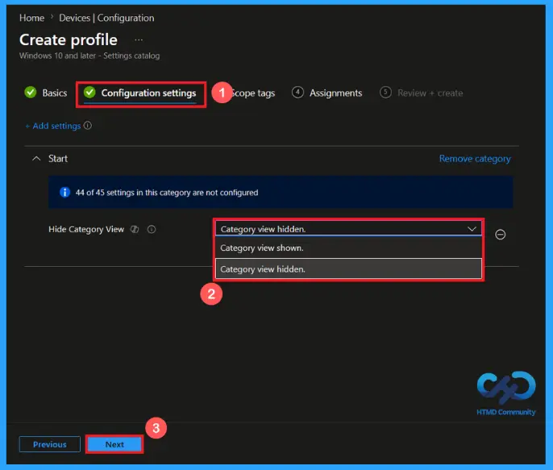
Scope tags are used to control access to Intune resources based on the user’s role. Adding scope tags is optional. You can add the scope tag using the Select Scope Tags button. Scope tags will not affect end users or devices. It controls which administrators can manage in Intune. Click Next to continue.
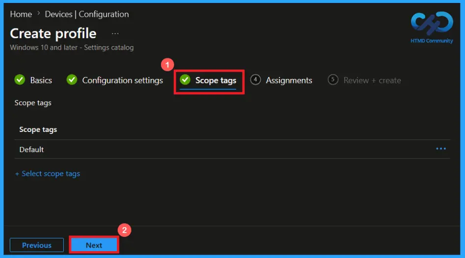
Assign the Policy to a Group
The Assignments tab allows you to deploy the policy to the required users or devices. Click on Add groups to add a group that receives the policy. There, you can search and select the group that you need to add. Here, I added the group HTMD-Test Policy. Then click Next to proceed with the configuration.
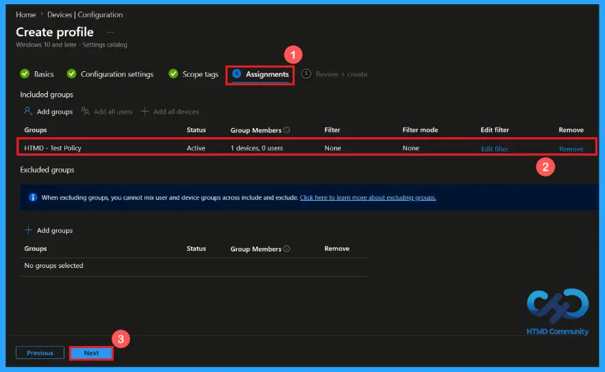
Verify and create the Policy
In the Review + Create step. We can review all configured settings for the profile. After making any necessary changes using the previous option, click Create to complete the process. A confirmation notification will appear on the screen, indicating that the policy for Hide Category View has been created successfully.
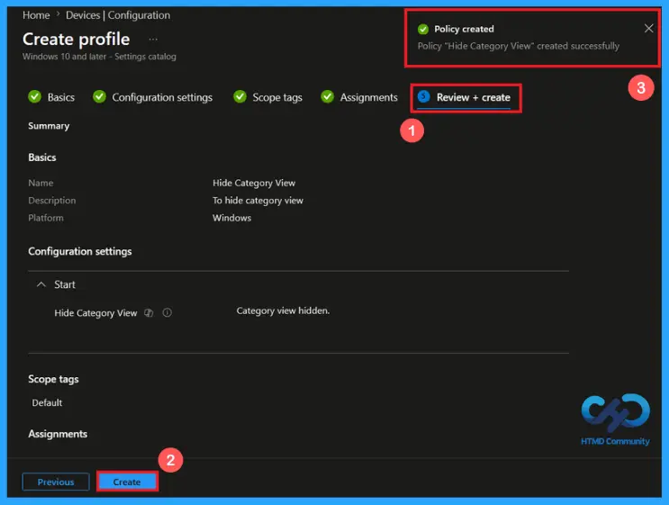
Device and user Check-in Status
After creating the policy, go to Devices > Configuration in the Intune admin center and open the Hide Category View policy. Verify the Device and user Check-in status, and the status shows Succeeded (1). If the status has not updated, use manual sync in the Company Portal to speed up the process.
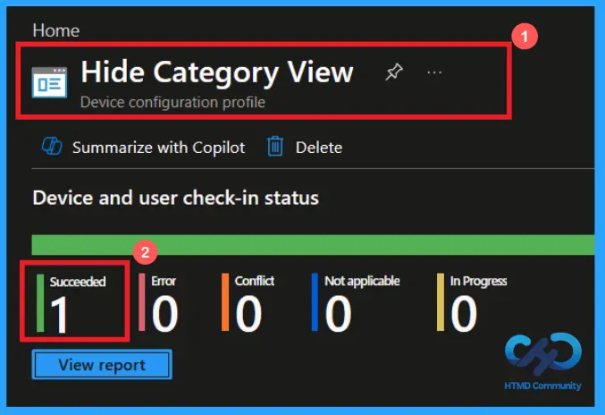
Client-side Verification of Hide Category View Policy
To confirm the policy has been successfully applied, Open the Event Viewer on the client device. Go to Applications and Services Logs > Microsoft > Windows > Device Management Enterprise Diagnostic Provider > Admin. Use the Filter Current Log to locate Intune Event ID 813. If the event shows Hide Category View policy, then the policy has been applied successfully on the client device.
MDM PolicyManager: Set policy int, Policy: (HideCategoryView), Area: (Start), EnrollmentID requesting merge: (EB427D85-802F-46D9-A3E2-D5B414587F63), Current User: (Device), Int: (0x1),Enrollment Type: (0x6), Scope: (0x0).
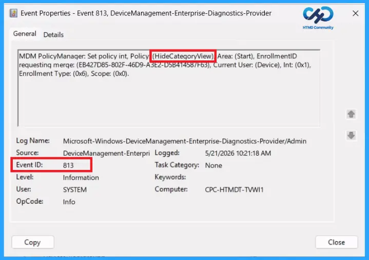
Windows Configuration Service Provider (CSP)
The Windows Configuration Service Provider (CSP) is a management feature in windows 10 and windows 11 devices. It defines, what each policy does, how policies work, and the allowed values that users can use while applying the policy, and how it connects to older group policy settings (Group Policy Mapping Details).
Description framework properties: The following table shows the description framework properties of the hide category view policy.
| Property name | Property value |
|---|---|
| Format | int |
| Access Type | Add, Delete, Get, Replace |
| Default Value | 0 |
Allowed Values refer to specific options or settings that users are allowed to apply when configuring the policy. These values define how the policy behaves on Windows devices.
- 0 (default) – Category view shown.
- 1 – Category view hidden.
Group Policy Mapping (Group Policy Analytics) in Microsoft Intune assists in transitioning existing Group Policy Objects (GPOs) to cloud-based management. It shows the registry location and administrative template information used for Hide category view in the Start Menu policy.
| Name | Value |
|---|---|
| Name | Hide Category View |
| Friendly Name | Hide Category view in the Start Menu |
| Location | Computer and User Configuration |
| Path | Start Menu and Taskbar |
| Registry Key Name | Software\Policies\Microsoft\Windows\Explorer |
| Registry Value Name | Hide Category View |
| ADMX File Name | Start Menu.admx |
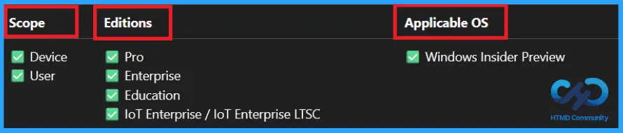
How to Remove the Assigned Group from the Hide Category View Policy
To remove an assigned group from the Hide Category View policy, open the policy from the configuration tab, go to the assignments section and click on the edit button on the assignment tab. Click the Remove button on this section to remove the Hide Category View policy. Click Review + Save after making the change.
For detailed information, you can refer to our previous post – Learn How to Delete or Remove App Assignment from Intune using by Step-by-Step Guide.
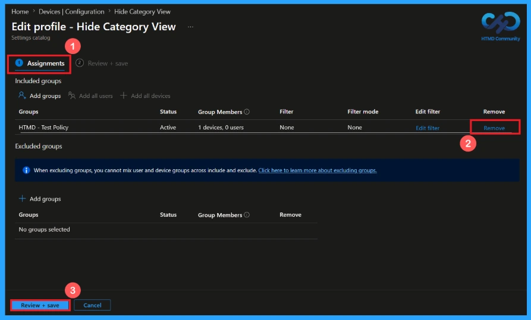
How to Delete the Hide Category View Policy from Intune
To delete an Intune policy for security or other reasons, search for the Hide Category View policy in the configuration section. After finding the policy name, click on the 3-dot menu next to it and tap the delete option. You can delete a policy for incorrect configuration, replacement, cleanup, or to avoid conflicts.
For detailed information, you can refer to our previous post – Learn How to Delete or Remove App Assignment from Intune using by Step-by-Step Guide.
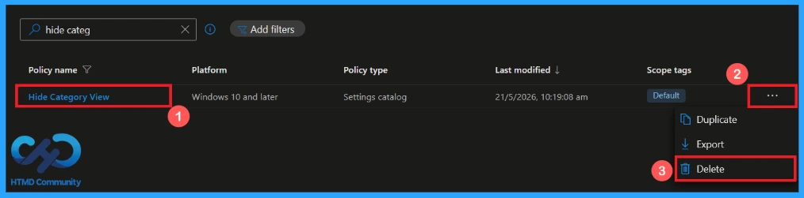
Need Further Assistance or Have Technical Questions?
Join the LinkedIn Page and Telegram group to get the latest step-by-step guides and news updates. Join our Meetup Page to participate in User group meetings. Also, Join the WhatsApp Community and WhatsApp Channel to get the latest news on Microsoft Technologies. We are there on Reddit as well.
Author
Anoop C Nair has been Microsoft MVP from 2015 onwards for 10 consecutive years! He is a Workplace Solution Architect with more than 22+ years of experience in Workplace technologies. He is also a Blogger, Speaker, and Local User Group Community leader. His primary focus is on Device Management technologies like SCCM and Intune. He writes about technologies like Intune, SCCM, Windows,
Cloud PC, Windows, Entra, Microsoft Security, Career, etc